Lons-le-Saunier (39) & environs
Dépannage, remorquage, transport & grutage AUTO REPAR · Lons-le-Saunier
Véhicule en panne ou accidenté ? AUTO REPAR intervient pour le dépannage, le remorquage, le transport et le grutage de votre véhicule. Dépanneur agréé préfecture (dépannage & fourrière) et agréé assurances. Puis notre garage prend le relais : mécanique, carrosserie, peinture, pare-brise.
- Agréé préfecture
- Agréé assurances
- Réseau TOP GARAGE
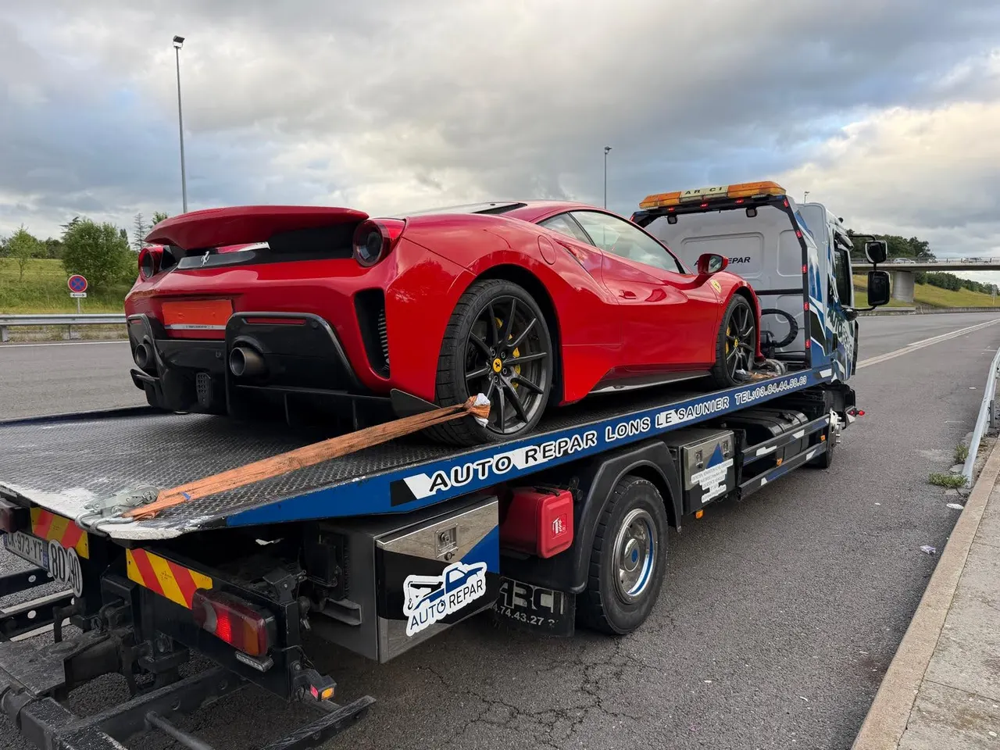
Dépannage & remorquage
Remorquage, transport & grutage de véhicules dans le Jura
Panne, accident, véhicule immobilisé ou à déplacer : nos dépanneuses et notre 4x4 d'intervention prennent en charge votre véhicule rapidement, dans tout le bassin lédonien.
-
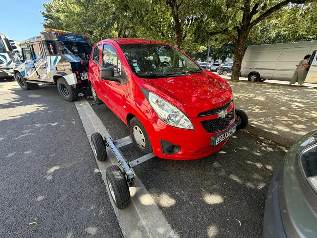
Dépannage & remorquage
Intervention sur place et remorquage de votre véhicule en panne ou accidenté jusqu'au garage.
-
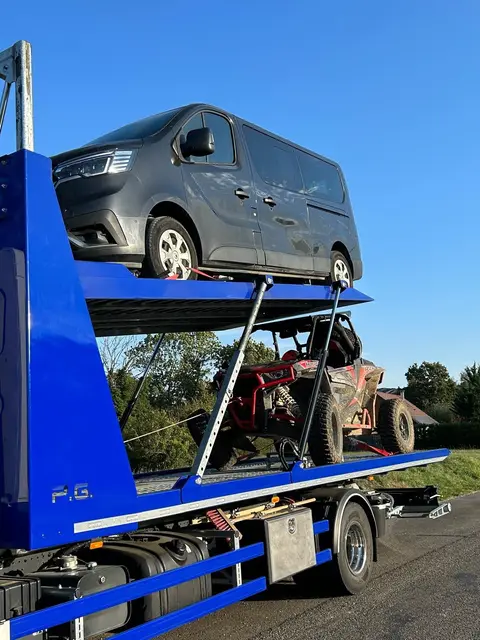
Transport de véhicules
Transport sur camion plateau de véhicules roulants ou non roulants.
-
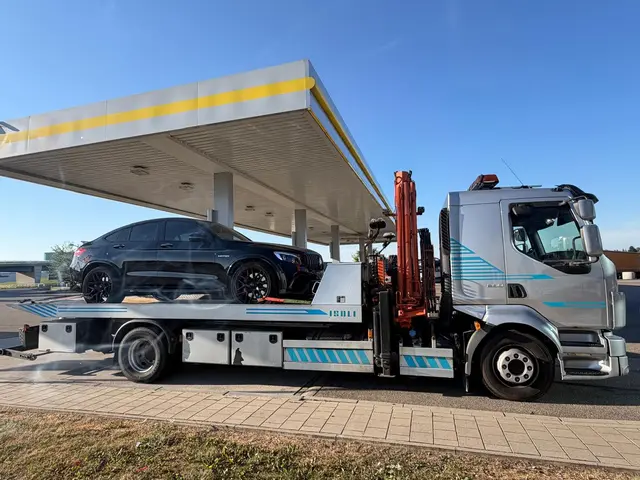
Grutage
Levage et grutage de véhicules difficiles d'accès.
-
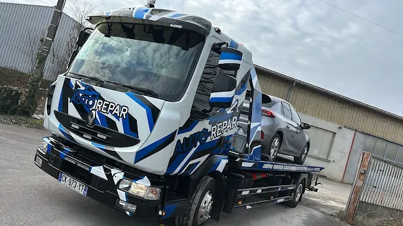
Fourrière
Dépanneur agréé par la préfecture pour le dépannage et la fourrière.
- Agréé préfecture : dépannage & fourrière
- Agréé assurances : dépannage & transport
Notre garage
Mécanique, carrosserie, peinture & pare-brise
Un atelier complet pour remettre votre véhicule en état, toutes marques confondues, de l'entretien courant à la restauration de véhicules anciens.
-
Mécanique auto VL
Révision constructeur, vidange, freinage, suspensions, distribution, embrayage, batterie, diagnostic électronique et pneumatiques sur véhicules légers.
-
Restauration VH
Restauration de véhicules historiques et de collection.
-
Carrosserie
Réparation de carrosserie après choc ou accident.
-
Peinture
Peinture automobile pour redonner à votre véhicule son aspect d'origine.
-
Pare-brise
Franchise offerte sur le remplacement de votre pare-brise.
-
Garantie constructeur
Entretien réalisé selon les préconisations d'origine : votre garantie constructeur reste préservée.
À propos
Votre dépanneur et garagiste de confiance à Lons-le-Saunier
GARAGE AUTO REPAR, dépanneur agréé et réparateur automobile multimarques membre du réseau TOP GARAGE, vous accompagne du dépannage jusqu'à la remise en état de votre véhicule à Lons-le-Saunier : remorquage, transport, grutage, puis mécanique, carrosserie, peinture et pare-brise.
Chez GARAGE AUTO REPAR, la garantie constructeur est préservée dès le premier jour. Nos garagistes qualifiés et continuellement formés aux nouvelles technologies respectent strictement les préconisations des constructeurs, quel que soit le type de véhicule.
- Agréé préfecture : dépannage & fourrière
- Agréé assurances : dépannage & transport
- Garagistes qualifiés & formés
- Membre du réseau TOP GARAGE
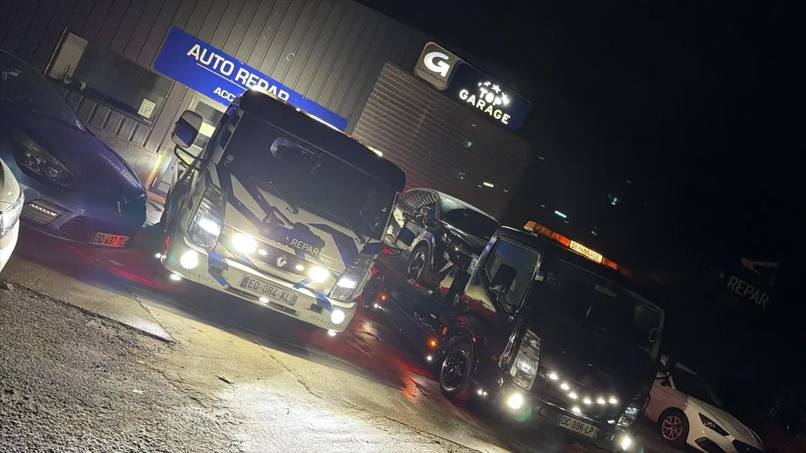
En images
Notre atelier et notre flotte de dépannage à Lons-le-Saunier
Découvrez notre atelier et nos véhicules d'intervention, prêts à intervenir rapidement en cas de panne dans tout le bassin lédonien.

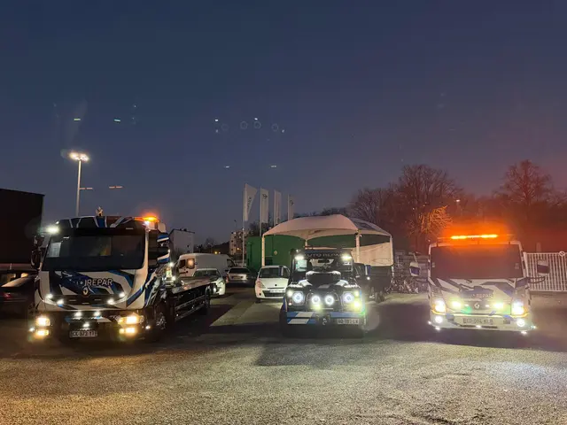

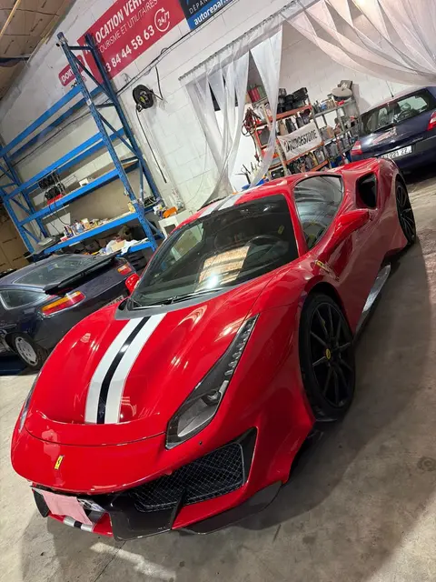

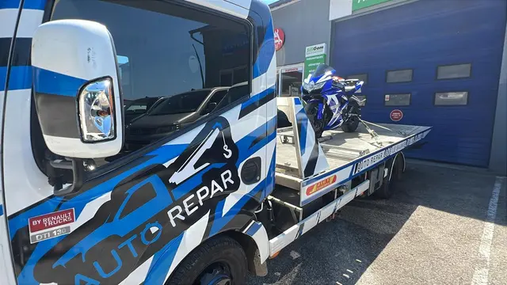

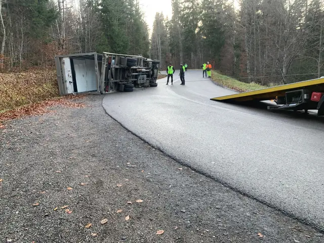

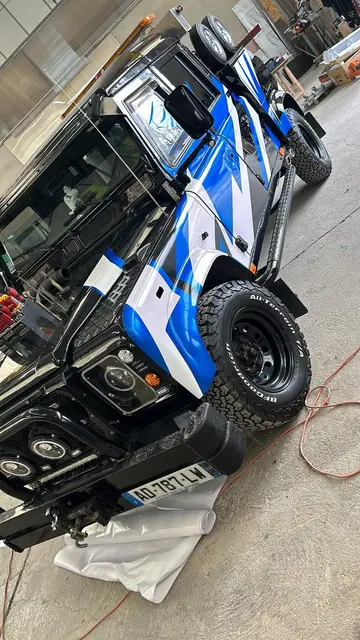

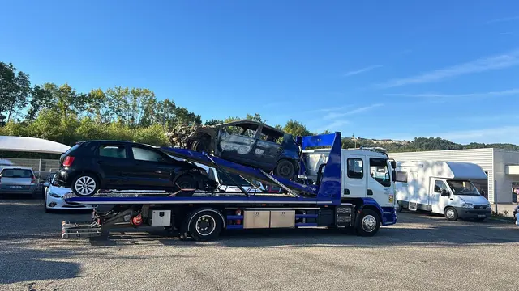

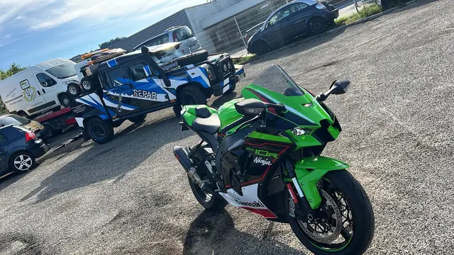

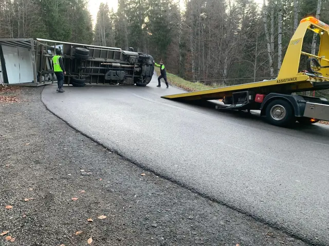

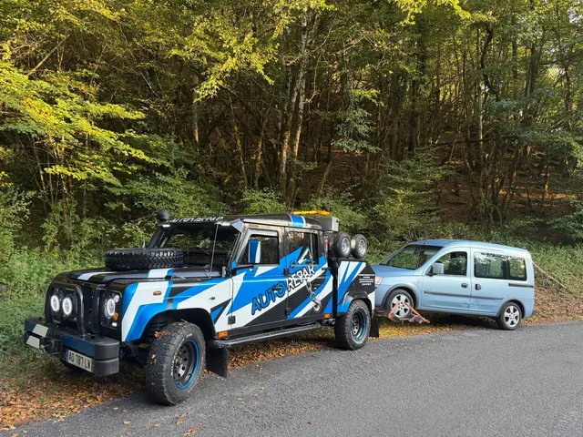

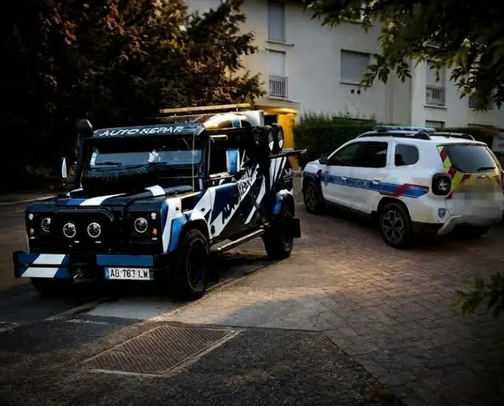


Zone d'intervention
Dépannage & garage auto près de chez vous dans le Jura
Basé à Lons-le-Saunier, AUTO REPAR intervient pour le dépannage, le remorquage, la réparation et l'entretien automobile dans tout le bassin lédonien et les communes environnantes du Jura (39) et de l'Ain.
- Lons-le-Saunier
- Montmorot
- Perrigny
- Courlaoux
- Macornay
- Bletterans
- Voiteur
- Poligny
- Arbois
- Salins-les-Bains
- Arc-et-Senans
- Orgelet
- Clairvaux-les-Lacs
- Saint-Amour
- Saint-Claude
- Coligny
- Chaussin
- Champagnole
Contact
Besoin d'un dépannage, d'un devis ou d'un rendez-vous ?
Appelez directement AUTO REPAR : notre équipe vous répond rapidement pour toute urgence, demande de devis ou prise de rendez-vous.